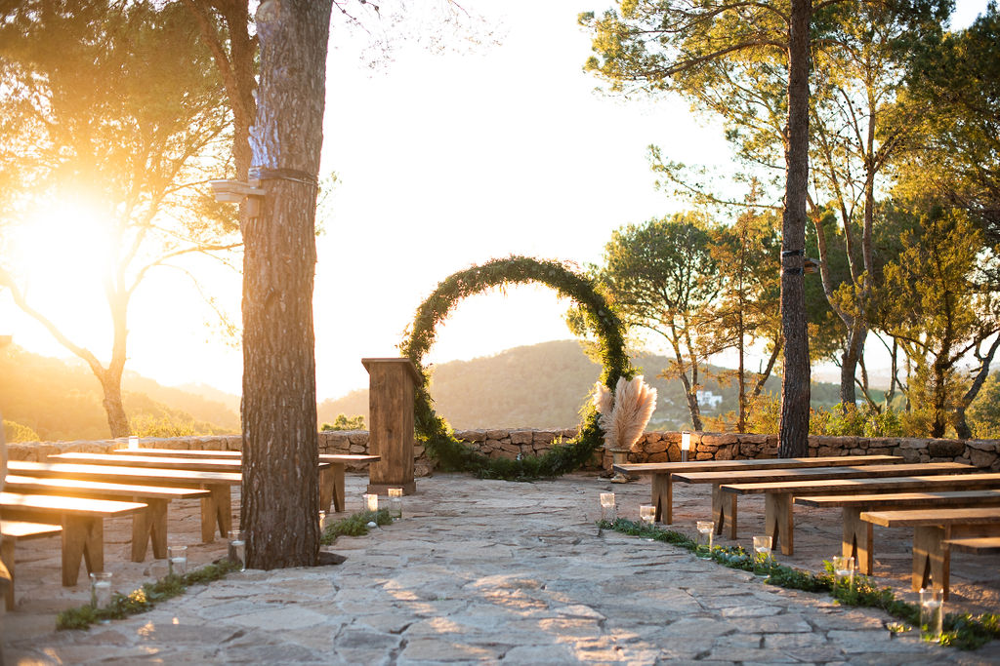
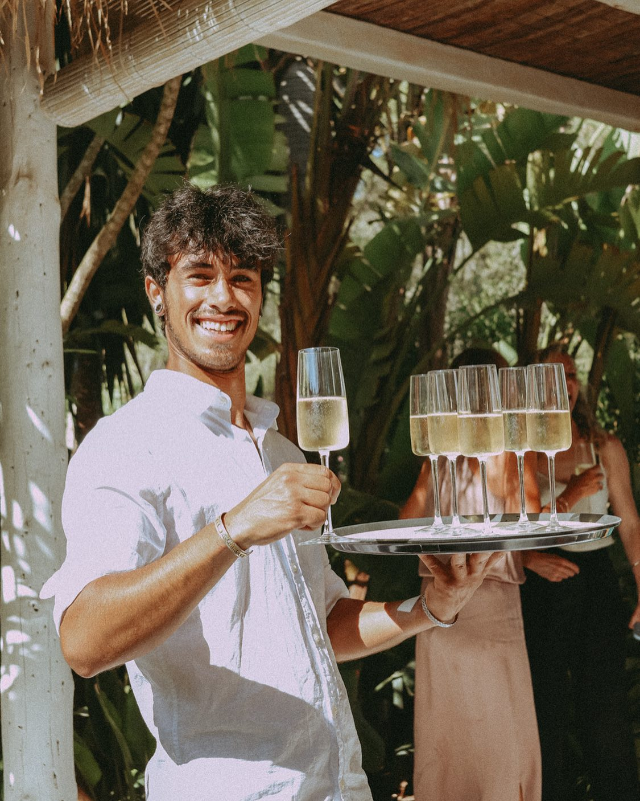
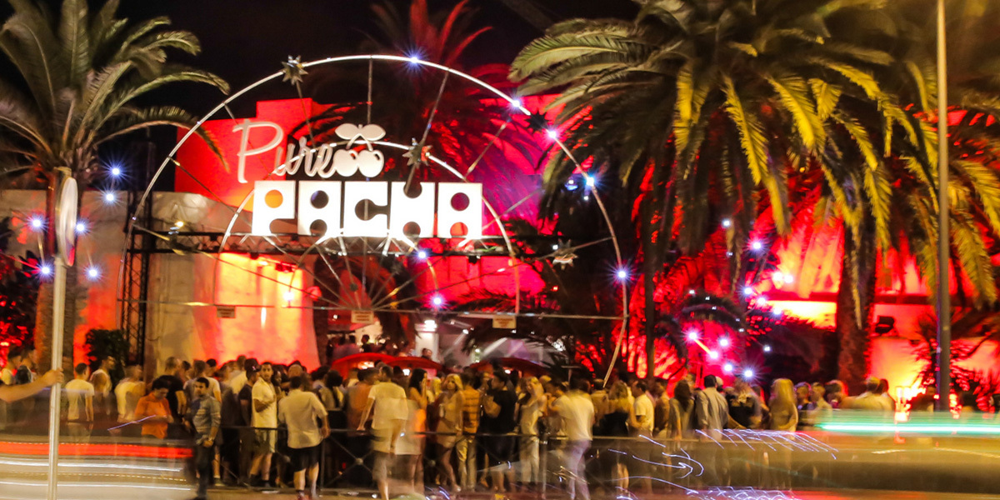

September 12 – 13, 2026
12. – 13. September 2026

Join us the evening before the wedding at Restaurant Cas Mila — a beautiful seaside spot on the cliffs above Cala Tarida with breathtaking sunset views. Relaxed, warm and the perfect way to kick off the celebrations together.
Feiert mit uns am Vorabend der Hochzeit im Restaurant Cas Mila — ein wunderschönes Restaurant auf den Klippen über der Cala Tarida mit atemberaubendem Sonnenuntergang. Entspannt, herzlich und der perfekte Auftakt in die Feierlichkeiten.
We are organising a shuttle service to bring everyone comfortably to the wedding venue — the exact location remains a little surprise 🤫. Departure is at 14:00 from five different pick-up points across the island.
Wir organisieren einen Shuttle Service, der euch bequem zur Hochzeitslocation bringt — der genaue Ort bleibt bis dahin eine kleine Überraschung 🤫. Abfahrt ist um 14:00 Uhr von fünf verschiedenen Abholpunkten auf der Insel.

Everyone arrives together on the shuttles at around 14:30 — we'll welcome you at the venue with a first glass of something cold, a moment to catch up and toast the day ahead before we all take our seats for the ceremony.
Alle kommen zeitgleich mit dem Shuttle Service gegen 14:30 Uhr an — wir begrüßen euch vor Ort mit einem ersten kühlen Drink, einem Moment zum Ankommen und einem gemeinsamen Anstoßen, bevor wir alle unsere Plätze für die Zeremonie einnehmen.
Our wedding ceremony will take place outdoors. We kindly ask you not to take photos during the ceremony — our professional photographer will capture every moment.
Unsere Trauung findet draußen statt. Wir bitten euch, während der Zeremonie keine Fotos zu machen — unser professioneller Fotograf wird jeden Moment festhalten.
After the ceremony, enjoy drinks and canapés while the newlyweds take their photos. Time to mingle, relax and celebrate!
Nach der Zeremonie genießt Drinks und Häppchen, während das Brautpaar seine Fotos macht. Zeit zum Plaudern, Entspannen und Feiern!
A festive sit-down dinner in warm company. Freshly prepared with the finest local ingredients — you can look forward to a delicious meal in a beautiful setting.
Ein festliches Abendessen in gemütlicher Runde. Frisch zubereitet mit besten lokalen Zutaten — freut euch auf ein köstliches Menü in stimmungsvollem Ambiente.
After Ben's incredible dinner it's time to shake off the shoes and let the dance floor come alive. Warm Ibiza night, glass in hand, the people we love around us — we'll keep the party going at the venue until midnight.
Nach Bens fantastischem Dinner ist es Zeit, die Schuhe abzustreifen und die Tanzfläche beben zu lassen. Warme Ibiza-Nacht, Glas in der Hand, die Menschen, die wir lieben, um uns herum — bis Mitternacht feiern wir gemeinsam an der Location weiter.
And when midnight comes… the night is far from over. See you at Pacha. 🌙
Und wenn Mitternacht schlägt… ist die Nacht noch lange nicht vorbei. Wir sehen uns im Pacha. 🌙

The night is far from over. We'll continue at Pacha — arguably the most iconic club in the world and an Ibiza institution since 1973. Open since dawn, red cherries everywhere, and a dance floor that has hosted every legend of electronic music.
Die Nacht ist noch lange nicht vorbei. Wir feiern weiter im Pacha — dem wohl berühmtesten Club der Welt und einer Ibiza-Institution seit 1973. Die roten Kirschen, das kultige Dach, die legendäre Tanzfläche — jeder große Name der elektronischen Musik hat hier gespielt.
And here's the magic: exactly on that night, our absolute favourite DJ Solomun is headlining. Deep, melodic, hypnotic — the perfect soundtrack to end our wedding celebrations. This is going to be unforgettable.
Und das Beste: An genau diesem Abend legt unser absoluter Lieblings-DJ Solomun auf. Tief, melodisch, hypnotisch — der perfekte Soundtrack, um unsere Hochzeitsfeier ausklingen zu lassen. Das wird unvergesslich.
After the wedding party, three return shuttles will depart from the wedding venue at 00:00. Route 1 heads to Pacha (for those joining the afterparty) and then continues to Santa Eularia. Routes 2 and 3 go straight back for those who want to end the night.
Nach der Hochzeitsparty fahren um 00:00 Uhr drei Rückfahrt-Shuttles von der Hochzeitslocation zurück. Route 1 fährt zum Pacha (für alle, die zur Afterparty wollen) und weiter nach Santa Eularia. Routen 2 und 3 fahren direkt zurück für alle, die die Nacht ausklingen lassen möchten.
Weather
September is one of the most beautiful months on Ibiza. Expect warm, sunny days with temperatures around 25–28°C during the day. The sea is still wonderfully warm for swimming. However, once the sun sets, it can cool down noticeably — especially with the sea breeze. We recommend bringing a light jacket or pashmina for the evening hours.
Wetter
Der September ist einer der schönsten Monate auf Ibiza. Ihr könnt mit warmen, sonnigen Tagen und Temperaturen um die 25–28°C rechnen. Das Meer ist noch wunderbar warm zum Schwimmen. Nach Sonnenuntergang kann es allerdings spürbar abkühlen — besonders mit der Meeresbrise. Wir empfehlen, eine leichte Jacke oder einen Pashmina-Schal für die Abendstunden mitzubringen.
Dress Code
Our dress code is cocktail attire. Think elegant but comfortable — no need to be overly formal, but please dress up for the occasion. Important for the ladies: our ceremony takes place outdoors on natural stone ground. Please avoid stilettos and pointed heels — opt for block heels, wedges, or elegant flat sandals instead. You'll thank us later! If you're unsure about cocktail attire, check out this guide for inspiration.
Dresscode
Unser Dresscode ist Cocktail-Kleidung. Denkt elegant, aber bequem — es muss nicht übertrieben formell sein, aber kleidet euch dem Anlass entsprechend. Wichtig für die Damen: Unsere Zeremonie findet draußen auf Natursteinboden statt. Bitte vermeidet Stilettos und spitze Absätze — greift stattdessen zu Blockabsätzen, Wedges oder eleganten flachen Sandalen. Ihr werdet es uns danken! Wenn ihr euch unsicher seid, was Cocktail-Kleidung bedeutet, schaut euch diesen Guide zur Inspiration an.